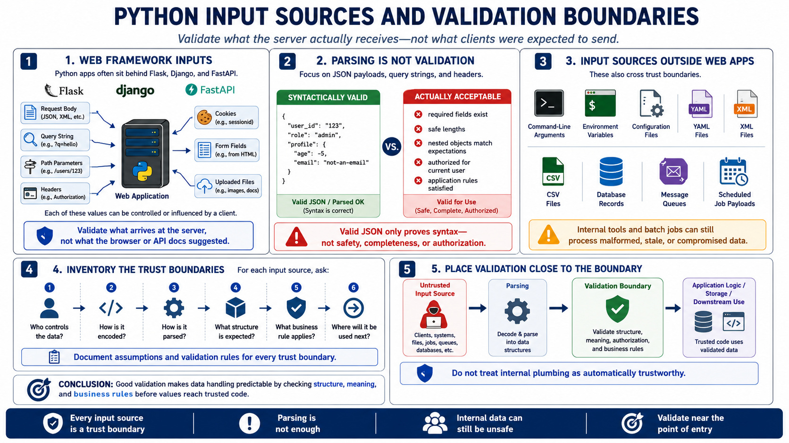

Python Input Sources
Connecting to LMS... Progress: in progress

Narration
Python applications often sit behind frameworks such as Flask, Django, and FastAPI. Those frameworks receive request bodies, query strings, path parameters, headers, cookies, form fields, and uploaded files. Each of those values can be controlled or influenced by a client. The application should validate what the server receives, not what the browser or API documentation suggested a client should send.
JSON payloads are common in Python APIs, but JSON parsing only tells the application that the payload is syntactically valid JSON. It does not prove that required fields exist, that values have safe lengths, that nested objects match expectations, or that the data is authorized for the current user. Query strings and headers have the same issue. They may parse correctly while still violating application rules.
Python programs also process input outside web frameworks. Command-line arguments, environment variables, configuration files, YAML, XML, CSV, database records, message queues, and scheduled job payloads all carry data across trust boundaries. A batch job or internal admin script may feel safer than a public endpoint, but it can still process malformed imports, stale records, or data from a compromised upstream system.
A practical validation strategy begins by inventorying input sources. For each source, ask who controls the data, how it is encoded, how it is parsed, what structure is expected, what business rule applies, and where the value will be used next. That map helps the team place validation close to the boundary and avoid treating internal plumbing as automatically trustworthy.